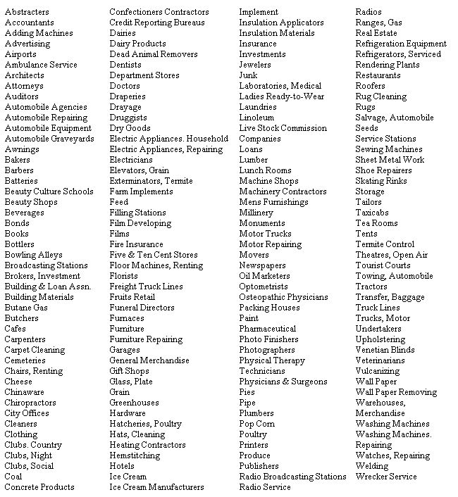

There is definitely a great interest in working as well as living in the country. We receive many letters from folks who say, "I want a homestead like yours - and I want a job nearby so I don't have to waste any time getting back and forth to work." The fact that moving your job and
setting up a homestead are both major tasks doesn't in the least affect the validity of either. But unless you're "well fixed" to tide you over the transition period, it would be smart not to move your job and start a homestead at the same time. I don't believe it makes any difference which you do first. If you keep your present job and get your homestead
all set up, running and - perhaps -paid for, then you'll have learned a good deal about business opportunities in that area. If, on the other hand, you don't like your present job and want to find another in the country, you can begin looking for a homestead site after you're comfortably settled into your new employment.
Perhaps, if you now live or work in a big city you'll say to yourself, "But how can I earn a living in the country - I'm no farmer!"
Don't let that bother you. You may not have realized it, but most of the people who live in the country aren't farmers any more.
Big business is on the move and small, decentralized manufacturing plants are now widely distributed throughout the country. Wages, of course, are generally lower the further you get from the big cities - but, then, so are living costs.
Even more people are now engaged in the "service" industries than in manufacturing or farming. If you now work in a service industry, you'll find - if you look into the matter - that there is untold opportunity in the rural service field. Remember, one advantage the city man moving to the country has over the country man is his more developed skill at earning a cash income.
If you're in one of the many service industries in the city, is there a need for your particular service in the country? Listed below is a group of services already being supplied by people in a town of 13,188. These are not imagined businesses. They're taken right out of the classified phone book for the town of Emporia, Kansas.
If you want to live in a smaller town and you find that the population is so small that the region can't support a full-time taxi service, maybe you can combine a taxi with a car rental, delivery service and ambulance. Or you might put together a bookstore, newsstand, stationery store, mimeograph service, house rental agency and travel bureau. Just as a country store supplies everything from shoes to meat - you can add up services until you're making the cash income you need.
While you're riding through the country looking for the perfect homestead, keep your eyes open for all the road signs put up by people operating little businesses of their own.
Of course you're aware of the tourist camps, motels, wayside markets, filling stations and real estate agencies. But also notice the less conspicuous signs: The country lawyer, doctor, sign painter, tailor, radio and TV repair man, beauty shop, plumber, upholsterer, photographer. The small manufacturing plants, the craftsmen - and so on.
Often these people operate right from their own homesand their places have enough land so they can really live. Enough so they can have a garden, fruits, berries, chickens . . . maybe a family cow.
There are millions of folks in the country who've found out how to combine a cash income with the home production of food.
Suggested Reading: How To Live in the Country Without Farming - $2.50.
|
 |
|
|